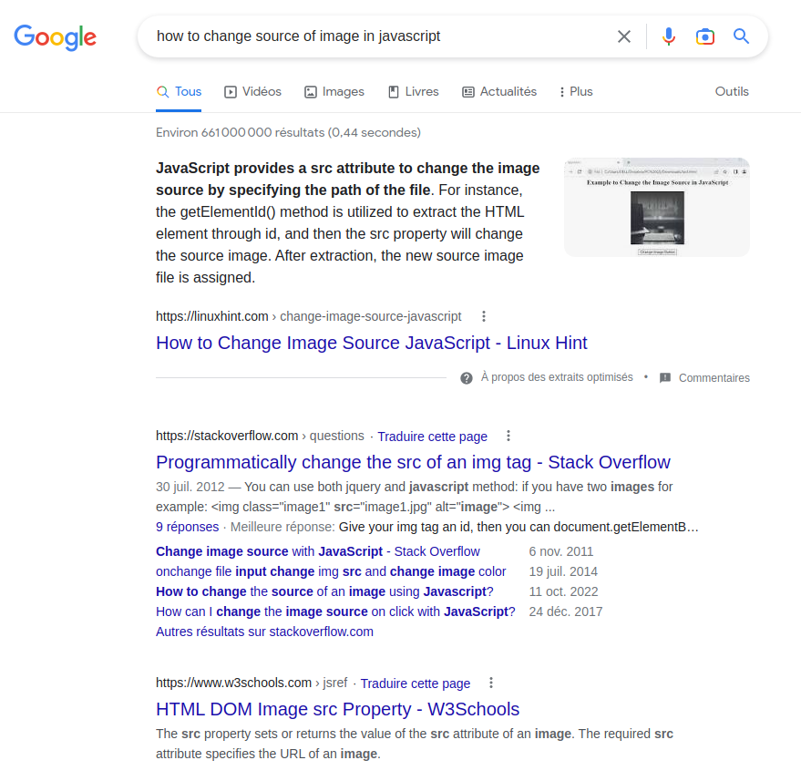
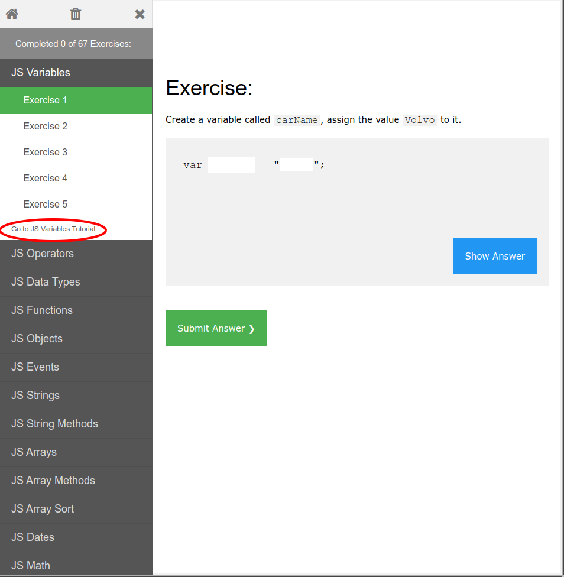

Introduction au langage Javascript
1. Préambule
Le Javascript est aujourd’hui un langage incontournable du développement Web.
C'est un langage de programmation multi-paradigme : orienté objet à prototype, impératif et fonctionnel (il partage ces deux dernières caractéristiques avec Python par exemple).
Le langage a été créé Netscape (fin 1995) est standardisé sous le nom d'ECMAScript (c'est peut-être un terme que vous rencontrerez - notamment sous sa forme abrégée pour désigner les différentes versions du standard : ES5, ES6, etc.).
Sa syntaxe est dérivée de celle du C/C++.
for (let i = 0; i < 10; i++) {
console.log("Iteration n°" + i);
}
var j = 0;
while (j < 10) {
console.log("...");
j++;
}
Ses autres particularités sont les suivantes :
- Langage interprété (pas de compilation, exécution directe dans un interpréteur)
- Typage dynamique (laisse l'ordinateur réaliser l'opération de typage à la volée)
- Modèle objet à base de prototypes
- Langage fonctionnel (les fonctions sont des objets de première classe : on peut passer des fonctions en argument à des fonctions, les assigner à des variables, les stocker dans des structures de données, etc.)
Pourquoi le JavaScript ?

- Couche "Comportement" (JavaScript) qui s'ajoute naturellement à la couche "Présentation" (CSS) et à la couche "Contenu structuré" (HTML) des technologies web.
- Création de contenus complexes, dynamiques et interactifs dont la logique est exécutée coté client, le moment venu.
- Les navigateurs web disposent de plusieurs API (Application Programming Interfaces) qui permettent de manipuler le document (API DOM), de manipuler des contenues 2D ou 3D (API Canvas et API WebGL) ou les informations de géolocalisation (API Geolocation) par exemple ; ces API sont accessibles en JavaScript.
1.1 Quelques idées reçues
-
JavaScript n'est pas à proprement parlé le seul langage du Web. En effet d'autres solutions ont été développées pour s’exécuter coté client (c'est par exemple le cas de Adobe Flash ou des applets Java - désormais tombés en désuétude). En revanche, avec la normalisation du langage et un meilleur support par tous les navigateurs et avec l'introduction de HTML5 (et de ses nombreuses API JavaScript), le Javascript a effectué un retour en force dans l'écosystème Web coté client. Il existe également un language de bas niveau développé pour le Web et standardisé en 2019, nommé WebAssembly.
-
Le Javascript n'est pas seulement utilisé coté client mais également de plus en plus comme un langage de script à part entière, notamment depuis l'existence de node.js (vers 2009), ou, plus récemment de Deno (2018). Il est ainsi désormais possible de l'utiliser également pour écrire du code côté serveur. Ce point ne sera pas abordé dans ce cours.


1.2 Environnements d'exécution JavaScript
Un environnement d'exécution Javascript est composé d'un moteur d'exécution JavaScript (runtime) et d'objets JavaScript spécifiques à l'environnement en question.
Les principaux environnement d'exécutions sont les navigateurs Web (Chrome utilise le moteur V8, Firefox utilise SpiderMonkey et Safari utilise WebKit).
Node.js est un environnement d’exécution célèbre (utilisant lui aussi le moteur V8) qui n'est lié à un aucun navigateur Web ; il permet ainsi l'exécution de code Javascript hors du contexte du navigateur.
1.3 Intégration dans une page HTML
-
L'intégration de code JavaScript se fait au moyen de la balise
<script> </script>. -
Elle peut se faire à deux endroits de la page HTML : dans l'en-tête ou dans le corps de la page HTML.
-
Le chargement et l'exécution de ces scripts respecte l'ordre d'apparition dans la page.
<html>
<head>
<script>
// Code Javascript Ici
</script>
<script src="monScript.js"></script>
</head>
<body>
<header>Contenu ...</header>
<main>
Contenu de la page
</main>
<footer>Contenu ...</footer>
<script>
// Code Javascript Ici
</script>
<script src="unAutreScript.js"></script>
</body>
</html>
Remarque:
- Les scripts placés dans l'en-tête (
<head>) sont exécutés avant la construction et l'affichage de la page.- Les script placés dans le corps (
<body>) sont exécutés au fur et à mesure que la page HTML est lue et que le DOM se construit.
Comme pour l'ajout de règles CSS, il existe donc bien deux manières (rédactions du code JavaScript dans la page HTML ou inclusion d'un fichier externe) d'intégrer un script JavaScript.
1.4 La manière dont ça fonctionne ?
- Écriture : Vous créez vos pages HTML et votre code JavaScript (que vous mettez dans le fichier HTML et/ou dans un ou plusieurs fichiers)
- Chargement : Le navigateur retrouve et charge la page en analysant (parsing) son contenu de haut en bas. Lorsque le navigateur rencontre du code JavaScript il l'analyse, vérifie sa correction puis l'exécute. Le navigateur construit un modèle interne de la page HTML : le DOM
- Exécution : Le navigateur affiche la page. JavaScript continue à s'exécuter, en utilisant le DOM pour examiner la page, la modifier, recevoir des événements depuis celle-ci, ou pour demander au navigateur d'aller chercher d'autres données sur le serveur web.
1.5 Quel intérêt d'utiliser de la programmation côté client avec JavaScript ?
-
Vérification des données saisies (-> n'envoyer au serveur que les valeurs correctes)
-
Réduire les traitements sur le serveur (pour diminuer sa charge par exemple)
-
Réduire les coûts de communication
-
Pouvoir modifier la présentation (animation, etc.) sans avoir recours au serveur
De manière générale : améliorer l'interactivité et diminuer les temps de réponse.
1.6 Votre environnement de travail
Vous utiliserez les mêmes outils (éditeur de code de votre choix et navigateur Web) que lors des premières séance de TP.
Comme lors des autres séances il est indispensable de travailler avec la fenêtre des outils pour développeurs (DevTools - accessible avec F12) de votre navigateur - celui-ci comprend en effet une console JavaScript.
2. Les base du langages
Liens utiles sur le JavaScript:
- Mozilla Developpers Network - Premier pas en JavaScript : https://developer.mozilla.org/fr/docs/Learn/JavaScript/First_steps
- W3schools Javascript Tutorial : https://www.w3schools.com/js/
- Eloquent JavaScript - 3rd edition (online, PDF, E-PUB, etc.) : https://eloquentjavascript.net/
- Pour se faire la main en JavaScript il faut pratiquer... des exercices comme ceux de W3schools puis des sites comme JavaScript30 peuvent donner de bonnes occasions de pratiquer !
De manière générale, si vous cherchez sur le Web en décrivant explicitement votre problème (et optionnellement en anglais), vous devrez trouver facilement la solution (StackOverflow, Mozilla Developpers Network, W3schools, etc.).

2.1 Éléments de base pour JavaScript dans le navigateur
🚀 Ouvrez un navigateur et une console JavaScript et saisissez les commandes qui suivent une-à-une (validation avec Enter) et observez bien le résultat! (nous verrons plus tard à quoi correspondent document et window)
console.log("Contenu du message à afficher");
document // Pour manipuler des objets sur la page
// Ne va pas fonctionner si aucun élément de la page n'a cet id !
// Trouver l'id d'un élément de la page et modifiez le de la manière suivante !
document.getElementById('myElem').innerHTML = "New content !"
// Ne va pas fonctionner si aucun élément de la page n'a cet id !
// Trouver l'id d'un élément de la page et modifiez le de la manière suivante !
document.querySelector('#myElem').innerHTML = "New content !"
// Ne va pas fonctionner si aucun élément 'div' n'a cette classe !
// Trouver la classe d'un élément sur la page pour modifier son contenu.
document.querySelector('div.myClass').innerHTML = "New content too !"
document.title // Le titre de la page (celui que vous écrivez dans <head><title>)
window // Objet relatif à la fenêtre
window.alert("Contenu de l'alerte !") // ouvre une fenêtre d'alerte
window.innerHeight // renvoie un entier, la hauteur de la fenêtre
window.innerWidth // renvoie un entier, la largeur de la fenêtre
window.screen // renvoie un Object JavaScript contenant des informations sur l'écran
// Un Object décrivant l'URL actuelle du document
window.location
// On accède à la propriété 'href' de cet objet
// ... c'est la chaîne de caractère qui correspond à l'URL actuelle:
window.location.href
2.2 Variables
2.2.1 Définition
En informatique, les variables sont des symboles qui associent un nom (l'identifiant) à une valeur.
Elles sont utilisées pour stocker des données dans la mémoire de l'ordinateur (on associe une valeur à un nom de variable).
2.2.2 Types
Vous rencontrerez deux types de variables :
-
types primitifs :
Boolean: deux valeurs littéralestrueetfalseNumber: nombres entiers ou flottants (1,3.14, etc.) et des valeurs particulières (Infinity,-Infinity,NaN)String: chaînes de caractères ("Salut !",'Hello')
-
variables de type objet (par exemple
Arraypour un tableau ouObjectpour stocker des paires de clés/valeurs) -
types spéciaux :
undefined(possède une unique valeur,undefinedet décrit une variable dont le contenu n'a jamais été initialisé)null(possède une unique valeur,nullet spécifie qu'une variable a bien été initialisée mais qu'elle ne point sur aucun objet)
Regardons en détails comment cela fonctionne.
2.2.3 Déclaration d'une variable
Les instructions qui suivent peuvent être saisies dans la console JavaScript de votre navigateur :
// On peut déclarer un variable sans lui affecter de valeur:
var a; // équivalent à `var a = undefined;`
var b, c;
console.log(a); // undefined
// Affectation avec la forme littérale
// (chaîne de caractère, entier, réel)
a = "Coucou";
b = 1;
c = 3.14;
// On peut affecter une valeur lors de la déclaration
var d = "Hello";
// On peut ensuite affecter une valeur d'un autre type
d = 12;
// Tableau d'entiers (forme littérale)
var myTableau = [1, 2, 3, 4];
var tableauVide = [];
var tableauVide = new Array(); // Identique à l'écriture précédente
// Un tableau peut contenir
// Objet JavaScript (forme littérale)
var myObj = {
"rate": 5,
"comment": "Awesome place ! Great Food !"
};
var autreObj = {};
var autreObj = new Object(); // Identique à l'écriture précédente
// Ces objets ont des méthodes :
var nb = 12;
var txt = nb.toString(); // Renvoie "12"
console.log(txt.length); // 2
On accède ainsi aux propriétés (attributs, méthodes) d'un object en utilisant un accesseurs de propriété. Cela permet de fournir un accès aux propriétés d'un objet en utilisant une notation avec un point ou une notation avec des crochets.
Remarque: Historiquement la déclaration de variable se fait avec
var. Depuis ES6 la bonne pratique est d'utiliserletouconst. Cette fonctionnalité est maintenant supportée par les différents navigateurs Web.
const:
const myConst = 12;
// On ne peut pas faire :
myConst = 15; // TypeError : invalid assignement to const 'myConst'
let:
let isValid = false;
// later in your code :
isValid = true;
Par ailleurs, il est possible de déterminer le type d'une variable en utilisant l'opérateur typeof :
var v0;
console.log(typeof v0); // undefined
var v1 = 12;
console.log(typeof v1); // number
var v2 = "Hello";
console.log(typeof v2); // string
var v3 = [1, 2, 3];
console.log(typeof v3); // object
var v4 = {"clé": "valeur"};
console.log(typeof v4); // object
var v5 = null;
console.log(typeof v5); // object
2.2.4 Règles de nommage des variables
- Pas d'espace, d’opérateurs arithmétiques (
+,-,/,*) ou de caractère de ponctuation (.,,,;) - Des lettres, des chiffres,
_ou$ - Ne peuvent pas commencer par un chiffre
- Noms sensibles à la casse
nomUtilisateur≠nomutilisateur - Interdiction d’utiliser des mots clés réservés JS (ex., if, then, else)
- Choisir des noms descriptifs (par exemple pour une variable correspondant au prix unitaire d'un produit, utiliser
prixUnitaireplutôt queu) - utiliser camelCase pour joindre des mots multiples dans un nom de variable (première lettre du premier mot en minuscule, première lettre des mots suivants en
majuscule :
nomUtilisateurplutôt quenom_utilisateur)
2.3 Opérateur arithmétiques, logiques et de comparaison
-
+,-,*,/,% -
++,-- -
==,!=,>,<,>=,<=... mais aussi===et!== -
||(pensez àoren Python),&&(pensez àanden Python),!(pensez ànoten Python)
Attention à la différence entre == et != d'une part et === et !== d'autre part...!
-
==égalité -
!=différence -
===égalité de valeur et de type -
!==différence de valeur ou de type
Ainsi :
'0' == 0 // true
'0' === 0 // false
null == undefined // true
null === undefined // false
On voit que l'opérateur == effectue des conversions de type avant de tester l'égalité / la différence. De manière générale, utilisez === et !== plutôt que == et !=, car c'est généralement ce que vous voulez.
2.4 Contrôle du flux d'exécution
-
Lorsque le navigateur web rencontre du code JavaScript il l'exécute dans l'ordre d'apparition (à quelques exceptions qui ne sont pas abordées).
-
Contrairement au Python, l'indentation ne joue pas de rôle dans la logique du code (cela ne veut pas dire qu'il ne faut pas respecter certaines règles! pensez à la lecture du code par vous ou d'autres développeurs!)
-
Instructions conditionnelles :
if,else,else ifswitch -
Instructions itératives :
for,while
Exemple 1:
// Pour i=0, tant que i inférieur à 35, et sachant qu'on incrémente i après chaque exécution du bloc ...
for (let i = 0; i < 35; i++) {
// Un message est écrit dans la console en fonction de la valeur de "i"
if (i < 12) {
console.log('La valeur de la variable "i" est actuellement inférieure à 12 !');
} else if (i < 25) {
console.log('La valeur de la variable "i" est actuellement inférieure à 25 (mais supérieure ou égale à 12) !');
} else {
console.log('La variable "i" vaut au moins 25 maintenant !')
}
}
Exemple 2
var i = 0; // On déclare la variable utilisée dans le test
// Le contenu du bloc va s'exécuter tant que la condition est valide
while (i < 5) {
console.log('Je suis dans l\'itération n' + i);
// On incrémente (i.e. on ajoute 1 à) la variable 'i'
i++;
}
Exemple 3
// Définition d'une fonction créant un paragraphe
// et l'ajoutant à la fin de la page
// (la fonction est définie, on pourra l'utiliser avec son nom 'createParagraph'
// mais elle n'est pas exécutée lors de sa définition, seulement lorsqu'elle
// sera invoquée par la suite).
function createParagraph() {
let para = document.createElement('p');
para.textContent = 'You clicked the button!';
document.body.appendChild(para);
}
// Créé un tableau référençant tous les éléments 'button':
let buttons = document.querySelectorAll('button');
// Utilisation d'une boucle pour parcourir le tableau dans son ensemble
for(let i = 0; i < buttons.length ; i++) {
// Ajoute un "click event listener" sur chaque bouton
// lors du clic, la fonction 'createParagraph'
// sera appelée:
buttons[i].addEventListener('click', createParagraph);
}
2.5 Commentaires
/*
Commentaire
multi lignes ...
*/
var a = 12;
// Commentaire sur une seule ligne
2.6 Fonctions
On a vu un exemple de fonction dans la partie 2.4. Il existe plusieurs syntaxe pour définir une fonction appelée addition, par exemple :
function addition(a, b) {
return a + b;
}
et
var addition = function (a, b) {
return a + b;
}
On pourra ensuite appeler cette fonction (ici elle attend donc 2 arguments) et stocker la valeur de retour dans une variable :
var resultat = addition(30, 20);
console.log(resultat); // 50
On notera qu'une fonction peut être donnée en argument à une autre fonction.
function multAdd(a, b, c, addFunction) {
return addFunction(a * b, c);
}
multAdd(2, 3, 4, addition); // 10
2.7 Portée (scope) des variables
-
Les variables peuvent avoir une portée globale ou locale.
-
En JavaScript, la portée d'une variable est définie par son emplacement dans le code source (elle apparaît de façon lexicale).
-
Une variable globale est définie partout dans le script. Elle a une portée globale.
-
Une variable déclarée à l'intérieur d'une fonction n'est définie que dans le corps de ceIe fonction. Elle est une variable locale et elle a une portée locale. C'est cela qu'on appelle "portée de fonction". On note toutefois qu'avec
letetconstil est aussi possible d'avoir uneportée de bloc. -
Les paramètres d'une fonction sont aussi des variables locales et elles ne sont définis que dans le corps de la fonction.
-
Une variable affectée mais non déclarée est considérée comme une variable globale. Par conséquent, même si on peut éviter d'utiliser
varquand on écrit du code dans la portée globale, pour déclarer les variables locales, il faudra toujours utiliservar,letouconst.
Exemple : portée de fonction
function addition(a, b) {
// 'a' et 'b' sont des variables locales,
// elles n'existent qu'au sein de la fonction 'addition'
return a + b;
}
console.log(a); // undefined
var resultat = addition(12, 13);
console.log(a); // undefined
Exemple : portée de bloc
function mult(a, b) {
// 'res' est une variable locale, elle n'est valable que
// dans le bloc définit par la fonction 'mult'
let res = 0;
for (let i = 0; i < b; i++) {
res += a;
// Ici la variable 'i' est définie
}
// Ici on a quitté le bloc, la variable 'i' est 'undefined'
return res;
}
Exemple : variable globale
var monNom = 'Matthieu';
// On pourra utiliser cette variable au sein de n'importe quelle fonction
// ou de n'importe quel bloc du script, elle est globale ...
function mult(a, b) {
// ... alors que 'a' et 'b' sont des variables locales
let res = 0;
for (let i = 0; i < b; i++) {
res += a;
}
return monNom + " a calculé que " + a + " * " + b + " est égal à " + res;
}
mult(12, 12) // 'Matthieu a calculé que 12 * 12 est égal à 144'
3. Manipulation du DOM
3.1 La variable document
Nous avons utilisé précédemment la variable nommée document : il s'agit d'un objet JavaScript qui représente un document HTML (le contenu de la fenêtre).
Cet object dispose de plusieurs propriétés intéressantes :
body(l'élément<body>)documentElement(l'élément<html)cookie(permet de lire / écrire des cookies)- etc.
Comme avec les autres objects JavaScript, on accède à ses propriétés en utilisant un accesseur de propriétés, par exemple avec la notation avec un point :
document.body
La variable document dispose également de propriétés très intéressantes permettant de sélectionner un (querySelector) ou plusieurs (querySelectorAll) éléments HTML en utilisant un sélecteur CSS (notation similaire à celles apprise dans le TP CSS) :
- sélection d'un élément par sa classe :
var navbar = document.querySelector('.navbar'); - sélection d'un élément par son type et sa classe :
var maDiv = document.querySelector('div.blue'); - sélection d'un élément par son id :
var menu = document.querySelector('#menu'); - sélection de toutes les 'div' du document :
var tableauDeDiv = document.querySelectorAll('div');(retourne un tableau)
La variable document dispose également d'une méthode pour sélectionner un élément par son identifiant seulement : document.getElementById('menu') (équivalent à document.querySelector('#menu')).
Ces méthodes pour sélectionner un ou plusieurs éléments seront indispensables dans la suite de ce cours.
Une fois une référence obtenue à un élément, il sera possible de modifier le contenu de cet élément, de modifier son style, de lui attacher un gestionnaire d'événement, etc.
3.2 Les principales méthodes des éléments HTML
Changer le contenu d'un élément HTML avec innerHTML:
// On sélectionne la div avec la classe 'test'
const target = document.querySelector('div.test');
// On remplace l'ensemble du contenu de cette div par un nouveau texte
target.innerHTML = 'Hello hello !';
Changer une propriété de style avec style:
// On sélectionne la div avec la classe 'test'
const target = document.querySelector('div.test');
// On change la valeur de la propriété CSS 'background-color':
// (notez que les noms de propriétés CSS avec tirets sont transformés en camelCase)
target.style.backgroundColor = 'red';
Enlever un élément HTML du DOM:
// On sélectionne la div avec la classe 'test'
const target = document.querySelector('div.test');
// On supprime l'élément (il est enlevé du DOM / de la page)
target.remove();
3.3 Création d'éléments HTML en JavaScript
On a vu qu'il était possible de modifier un élément HTML existant ou de le supprimer avec JavaScript.
Il est également possible de créer un nouvel élément HTML avec JavaScript :
// On créé un élément de type paragraphe
// Attention, il a été créé en mémoire mais n'est pas encore ajouté au document !
const monParagraphe = document.createElement('p');
// On peut dès maintenant définir le contenu de l'élément et éventuellement son style
monParagraphe.innerHTML = 'Hey there !';
monParagraphe.style.color = 'red';
// On ajoute cet élément, par exemple après le dernier élément de la page :
document.body.appendChild(monParagraphe);
Il est aussi possible de choisir d'insérer un élément à un endroit particulier du document :
// On créé un élément de type paragraphe
// Attention, il a été créé en mémoire mais n'est pas encore ajouté au document !
const monParagraphe = document.createElement('p');
// On peut dès maintenant définir le contenu de l'élément et éventuellement son style
monParagraphe.innerHTML = 'Hey there !';
monParagraphe.style.color = 'red';
// On sélectionne l'élément parent
const parent = document.querySelector('#menu'):
// On sélectionne l'élément, enfant du parent, avant lequel insérer le nouvel élément
// (ici le dernier paragraphe)
const otherChild = parent.querySelector('p:last-child');
// On ajoute cet élément juste avant 'otherChild'
parent.insertBefore(monParagraphe, otherChild);
4. Événements
-
Les interactions de l'utilisateur avec la page peuvent provoquer l'exécution de code JavaScript:
- clic sur un bouton ou sur tout autre élément HTML
- survol de la souris au dessus d'un élément HTML
- modification d'une zone de saisie
- appui sur une touche de clavier
- etc.
-
Ces interactions sont gérées via des événements (Event)
4.1 Exemple d'événements
| nom | événement | s'applique à |
|---|---|---|
| blur | perte du focus | champ de saisie, window |
| focus | attribution du focus | champ de saisie, window |
| click | clic sur un objet | |
| change | changement dans un champ de saisie | |
| contextmenu | clic droit sur un objet | |
| dblclick | double clic sur un objet | |
| load | la page ou l'image est chargée | window, image |
| keydown | touche enfoncée | |
| keyup | l'utilisateur a appuyé sur une touche | |
| keypress | touche relâchée | |
| mousedown | un bouton de la souris est enfoncée | |
| mouseup | le bouton de la souris est relâché | |
| mousemove | déplacement de la souris | |
| mouseout | le souris vient de quitter une zone | |
| mouseover | la souris entre sur une zone |
4.2 Définir un gestionnaire d'événement (event handler)
Il existe 2 méthodes pour attacher / détacher un gestionnaire d'événement d'un élément HTML. Toutes les 2 nécessitent de connaître le nom de l'événement ciblé :
- Avec
addEventListeneretremoveEventListener:
// Création de la fonction qui sera appelée lorsque l'événement se produit
function displayAlertOnClick() {
alert('clicked !');
}
// Sélection de la cible de l'événement, ici l'élément HTML body
const target = document.querySelector('body');
// Attache le gestionnaire d'événement à la cible
target.addEventListener('click', displayAlertOnClick);
// Essayez ensuite de cliquer n'importe où sur la page
// ...
// On peut ensuite enlever ce gestionnaire d'événement
target.removeEventListener('click', displayAlertOnClick);
// Essayez à nouveau de cliquer sur la page, il ne se passe plus rien.
// ....
- Avec la propriété 'on' + nom de l'événement de la cible (
onclick,onload, etc.):
// Création de la fonction qui sera appelée lorsque l'événement se produit
function displayAlertOnClick() {
alert('clicked !');
}
// Sélection de la cible de l'événement, ici l'élément HTML body
const target = document.querySelector('body');
// Attache le gestionnaire d'événement à la cible
target.onclick = displayAlertOnClick
// Essayez ensuite de cliquer n'importe où sur la page
// ...
// On peut ensuite enlever ce gestionnaire d'événement
// (ou plutôt le remplacer par null ou undefined)
target.onclick = null;
// Essayez à nouveau de cliquer sur la page, il ne se passe plus rien.
// ....
Cette méthode ne permet pas d'ajouter plusieurs gestionnaires d'événements du même type à un élément HTML (contrairement à la première méthode).
5. Mise en pratique
🚀 Rendez-vous sur la page https://www.w3schools.com/js/exercise_js.asp et commencez les exercices dans l'ordre : faites les 15 premiers (JS Variables, JS Operators, JS Data Types et JS Functions).
Ces exercices simples mettent l'accent sur votre bonne compréhension du mécanisme de base de l'écriture du code JavaScript. Ils représentent également un bon moyen d'apprendre certaines de ces notions par la pratique.
Soyez attentif aux énoncés et suivez votre instinct ! N'hésitez pas à demander et/ou à vous rendre sur le tutoriel correspondant avant de cliquer sur Show Answer :)
